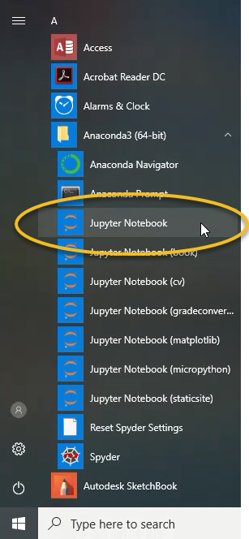
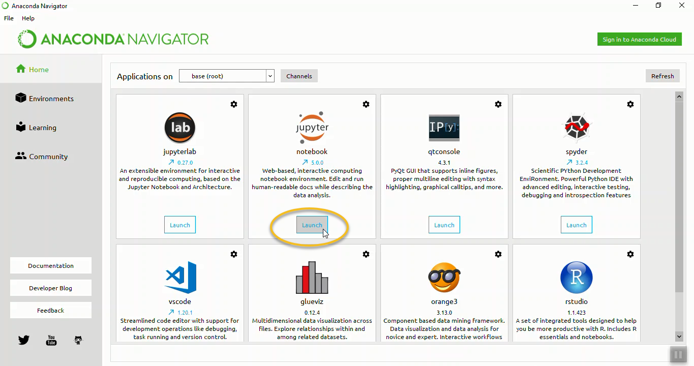

Opening a Jupyter Notebook¶
In this section, we will run through how to open a jupyter notebook on Windows 10 and MacOS. Jupyter notebooks are one way problem solvers can write and execute Python code. Jupyter notebooks contain Python code, the output of that code produces when it is run and markdown cells to explain what the code means. On Windows 10, a Jupyter notebook can be started from the Anaconda Prompt, the Windows start menu and Anaconda Navigator.
3 ways to open a Jupyter notebook:¶
Windows Start Menu
Anaconda Prompt
Anaconda Navigator
Windows Start Menu¶
A simple way to open a Jupyter notebook is to use the Windows start menu.
Open the Windows start menu and select [Anaconda3(64 bit)] –> [Jupyter Notebook]

This will open the Jupyter file browser in a web browser tab.
In the upper right select [New] –> [Python 3]
A new notebook will open as a new tab in your web browser

To rename the Jupyter notebook, click the file name at the top of the page to the right of the Jupyter icon.
This will open a dialog box where the new name can be typed.

Try typing this in the first cell in the notebook to the right of the In [ ]: prompt:
import this
Then click the run button in the middle of the menu at the top of the notebook.

The Anaconda Prompt¶
Another method to start a new Jupyter notebook is to use the Anaconda Prompt.
Go to the Windows start menu and select [Anaconda Prompt] under [Anaconda3].

If you don’t see the Anaconda Prompt in the Windows Start Menu, then you need to install Anaconda. Download Anaconda at the following link: Anaconda.com/downloads
The Anaconda Prompt window should look something like:

At the Anaconda Prompt type:
> jupyter notebook
This will start the jupyter notebook. The output in the text terminal will look something like below:
Copy/paste this URL into your browser when you connect for the first time,
to login with a token:
http://localhost:8888/?token=6bdef677d3503fbb23e1b4fa0c802e ...
[I 16:14:12.661 NotebookApp] Accepting one-time-token-authenticated ...
A web browser should open and you should be able to see the jupyter file browser.
In the upper right select [New] –> [Python 3]
You will see a new tab open in your web browser. This new page is a jupyter notebook.
3. Anaconda Navigator¶
One additional way to open a jupyter notebook is to use Anaconda Navigator. Open Anaconda Navigator using the Windows start menu and select [Anaconda3(64-bit)] –> [Anaconda Navigator].

An Anaconda Navigator will open. In the middle of the page, in the jupyter notebook tile, click [Launch]

A jupyter file browser will open in a web browser tab.
In the upper right select [New] –> [Python 3]
A new notebook will open as a new tab in your web browser
Opening a Jupyter Notebook on MacOS¶
To open a Jupyter notebook on MacOS, open the MacOS terminal and type:
$ jupyter notebook
If a web browser does not open, jupyter may not be installed. Refer to the previous section on how to install jupyter on MacOS. There also may be an issue using the system version of Python. A solution is to install the Anaconda distribution of Python or use homebrew to install Python.
Opening a Jupyter Notebook on Linux¶
To open a Jupyter notebook using the Linux operating system, open a terminal and type:
$ jupyter notebook
If a web browser does not open, copy the URL listed in the terminal (when Jupyter starts) into a browser window.